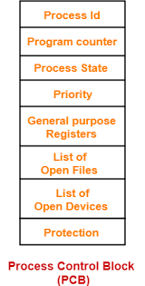
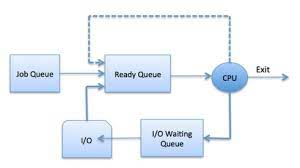
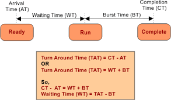

Introduction of Process Management
Process Management in OS
A Program does nothing unless its instructions are executed by a CPU. A program in execution is called a process. In order to accomplish its task, process needs the computer resources.
There may exist more than one process in the system which may require the same resource at the same time. Therefore, the operating system has to manage all the processes and the resources in a convenient and efficient way.
Some resources may need to be executed by one process at one time to maintain the consistency otherwise the system can become inconsistent and deadlock may occur.
The Process requires computer resources to complete its task. More than one process can exist in the system, which needs the same resources at the same time. So, the operating system handles all the resources and processes effectively.
The operating system is responsible for the following activities in connection with Process Managemen
Types of Processes
There are two types of Processes:
It is a type of process in which the process execution time is calculated with the help of the amount of time a process spends to complete the input/output operations.
CPU-Bound Process is another type of process in which the process execution time is calculated with the help of the CPU speed. If we use a faster processor, then the CPU-Bound Process may execute faster.
Components of Process
There are four components of the process:
Text consists of the value of the program counter and the processor’s registers content that is represented by the current activity.
Data contains both static as well as global variables.
Stack contains temporary data like local variables, return addresses, and method/function.
Heap is a dynamic memory which is allocated during the run time of a process.
Attributes of a process
The Attributes of the process are used by the Operating System to create the process control block (PCB) for each of them. This is also called context of the process. Attributes which are stored in the PCB are described below.
When a process is created, a unique id is assigned to the process which is used for unique identification of the process in the system.
A program counter stores the address of the last instruction of the process on which the process was suspended. The CPU uses this address when the execution of this process is resumed.
The Process, from its creation to the completion, goes through various states which are new, ready, running and waiting. We will discuss about them later in detail.
Every process has its own priority. The process with the highest priority among the processes gets the CPU first. This is also stored on the process control block.
Every process has its own set of registers which are used to hold the data which is generated during the execution of the process.
During the Execution, Every process uses some files which need to be present in the main memory. OS also maintains a list of open files in the PCB.
OS also maintain the list of all open devices which are used during the execution of the process
Process States
he process, from its creation to completion, passes through various states. The minimum number of states is five.

The following are the states of the Process.
The state in which a process is created. The New state is the newly created program which is stored in the secondary storage, and taken by the operating system at the time of process creation.
After a process has been created, it enters into the ready state means the process is loaded into the memory. In this, the process is set to run and wait for its execution time to get the CPU. Processes that are ready for CPU execution are placed in a queue for a ready process.
In a run state, the CPU selects the process for execution and executes the instructions within the process.
If the process is in run state and the process needs some resources for execution, but the resource is held by some other process than the process enters into the blocked or waiting state.
If the execution of the process is completed, then the process enters into the terminated or completed state.
Sometimes, due to the minimum number of resources, some process which is in ready state transfer or moves to secondary storage from the primary storage, and this type of process that move in the ready state are called suspend ready.
Suspend-wait is like suspend blocked and uses the process which is performing input/output operation and due to minimum amount of main memory move them into secondary storage. It may go to suspend ready when work is finished.
Operations on the Process
Once the process is created, it will be ready and come into the ready queue (main memory) and will be ready for the execution.
Out of the many processes present in the ready queue, the Operating system chooses one process and start executing it. Selecting the process which is to be executed next, is known as scheduling.
Once the process is scheduled for the execution, the processor starts executing it. Process may come to the blocked or wait state during the execution then in that case the processor starts executing the other processes.
Once the purpose of the process gets over then the OS will kill the process. The Context of the process (PCB) will be deleted and the process gets terminated by the Operating system.
Process Schedulers and Process Queue in OS
Process Schedulers
The process scheduling is the activity of the process manager that handles the removal of the running process from the CPU and the selection of another process on the basis of a particular strategy.
Process scheduling is an essential part of a Multiprogramming operating systems. Such operating systems allow more than one process to be loaded into the executable memory at a time and the loaded process shares the CPU using time multiplexing.
There are three types of process scheduler.
Long term scheduler is also known as job scheduler. It chooses the processes from the pool (secondary memory) and keeps them in the ready queue maintained in the primary memory.
Long Term scheduler mainly controls the degree of Multiprogramming. The purpose of long term scheduler is to choose a perfect mix of IO bound and CPU bound processes among the jobs present in the pool.
If the job scheduler chooses more IO bound processes then all of the jobs may reside in the blocked state all the time and the CPU will remain idle most of the time. This will reduce the degree of Multiprogramming. Therefore, the Job of long term scheduler is very critical and may affect the system for a very long time.
Short term scheduler is also known as CPU scheduler. It selects one of the Jobs from the ready queue and dispatch to the CPU for the execution.
A scheduling algorithm is used to select which job is going to be dispatched for the execution. The Job of the short term scheduler can be very critical in the sense that if it selects job whose CPU burst time is very high then all the jobs after that, will have to wait in the ready queue for a very long time.
This problem is called starvation which may arise if the short term scheduler makes some mistakes while selecting the job.
Medium term scheduler takes care of the swapped out processes.If the running state processes needs some IO time for the completion then there is a need to change its state from running to waiting.
Medium term scheduler is used for this purpose. It removes the process from the running state to make room for the other processes. Such processes are the swapped out processes and this procedure is called swapping. The medium term scheduler is responsible for suspending and resuming the processes.
It reduces the degree of multiprogramming. The swapping is necessary to have a perfect mix of processes in the ready queue.
Difference between Long-Term Scheduler, Short-Term Scheduler, and Middle-Term Scheduler
| Long-term scheduler | Short-term scheduler | Middle-term scheduler |
|---|---|---|
| The Long-term scheduler means a Job Scheduler. | A short-term scheduler means a CPU Scheduler. | Middle-term means a process is swapping scheduler. |
| The speed of the Long-term scheduler is less than the short-term scheduler. | The speed of the short-term scheduler is faster than the long-term scheduler, and Medium-term scheduler. | The speed of the Middle-term scheduler is between the short-term scheduler and the long-term scheduler |
| The long-term scheduler first chooses the process from memory, and after that, it loads the process from memory then executes it. | The short-term scheduler chooses those processes that are ready to execute. | The medium-term scheduler helps to reintroduce the process in the memory so that the process execution can be continued again. |
| In a time-sharing system, the Long-term scheduler does not exist. | In a time-sharing system, Short-term scheduler is less exist. | A Medium-term scheduler is just like a part of Time-sharing systems. |
Process Queue
The Operating system manages various types of queues for each of the process states. The PCB related to the process is also stored in the queue of the same state. If the Process is moved from one state to another state then its PCB is also unlinked from the corresponding queue and added to the other state queue in which the transition is made.
There are the following queues maintained by the Operating system.
In starting, all the processes get stored in the job queue. It is maintained in the secondary memory. The long term scheduler (Job scheduler) picks some of the jobs and put them in the primary memory.
Ready queue is maintained in primary memory. The short term scheduler picks the job from the ready queue and dispatch to the CPU for the execution.
When the process needs some IO operation in order to complete its execution, OS changes the state of the process from running to waiting. The context (PCB) associated with the process gets stored on the waiting queue which will be used by the Processor when the process finishes the IO.
Various Times related to the Process
The time at which the process enters into the ready queue is called the arrival time.
The total amount of time required by the CPU to execute the whole process is called the Burst Time. This does not include the waiting time. It is confusing to calculate the execution time for a process even before executing it hence the scheduling problems based on the burst time cannot be implemented in reality.
The Time at which the process enters into the completion state or the time at which the process completes its execution, is called completion time.
The total amount of time spent by the process from its arrival to its completion, is called Turnaround time.
The Total amount of time for which the process waits for the CPU to be assigned is called waiting time.
The difference between the arrival time and the time at which the process first gets the CPU is called Response Time.
Interrupts
The interrupt is a signal emitted by hardware or software when a process or an event needs immediate attention. It alerts the processor to a high-priority process requiring interruption of the current working process. In I/O devices one of the bus control lines is dedicated for this purpose and is called the Interrupt Service Routine (ISR).
When a device raises an interrupt at let’s say process i, the processor first completes the execution of instruction i. Then it loads the Program Counter (PC) with the address of the first instruction of the ISR. Before loading the Program Counter with the address, the address of the interrupted instruction is moved to a temporary location. Therefore, after handling the interrupt the processor can continue with process i+1.
While the processor is handling the interrupts, it must inform the device that its request has been recognized so that it stops sending the interrupt request signal. Also, saving the registers so that the interrupted process can be restored in the future, increases the delay between the time an interrupt is received and the start of the execution of the ISR. This is called Interrupt Latency.
Types of Interrupt
Interrupt signals may be issued in response to hardware or software events. These are classified as hardware interrupts or software interrupts, respectively
Hardware Interrupts:
In a hardware interrupt, all the devices are connected to the Interrupt Request Line. A single request line is used for all the n devices. To request an interrupt, a device closes its associated switch. When a device requests an interrupt, the value of INTR is the logical OR of the requests from individual devices.
A hardware interrupt is a condition related to the state of the hardware that may be signaled by an external hardware device, e.g., an interrupt request (IRQ) line on a PC, or detected by devices embedded in processor logic to communicate that the device needs attention from the operating system. For example, pressing a keyboard key or moving a mouse triggers hardware interrupts that cause the processor to read the keystroke or mouse position.
In many systems, each device is associated with a particular IRQ signal. This makes it possible to quickly determine which hardware device is requesting service and expedite servicing of that device.
The sequence of events involved in handling an IRQ:
Software Interrupts :
he processor requests a software interrupt upon executing particular instructions or when certain conditions are met. Every software interrupt signal is associated with a particular interrupt handler. A software interrupt may be intentionally caused by executing a special instruction that invokes an interrupt when executed by design. Such instructions function similarly to subroutine calls and are used for various purposes, such as requesting operating system services and interacting with device drivers.
Software interrupts may also be unexpectedly triggered by program execution errors. These interrupts are typically called traps or exceptions.
Handling Multiple Devices
When more than one device raises an interrupt request signal, then additional information is needed to decide which device to be considered first. The following methods are used to decide which device to select: Polling, Vectored Interrupts, and Interrupt Nesting. These are explained as following below.
In polling, the first device encountered with the IRQ bit set is the device that is to be serviced first. Appropriate ISR is called to service the same. It is easy to implement but a lot of time is wasted by interrogating the IRQ bit of all devices.
In vectored interrupts, a device requesting an interrupt identifies itself directly by sending a special code to the processor over the bus. This enables the processor to identify the device that generated the interrupt. The special code can be the starting address of the ISR or where the ISR is located in memory and is called the interrupt vector.
n this method, the I/O device is organized in a priority structure. Therefore, an interrupt request from a higher priority device is recognized whereas a request from a lower priority device is not. The processor accepts interrupts only from devices/processes having priority.
Interrupt Handling
We know that the instruction cycle consists of fetch, decode, execute and read/write functions. After every instruction cycle, the processor will check for interrupts to be processed. If there is no interrupt in the system, it will go for the next instruction cycle, given by the instruction register. If there is an interrupt present, then it will trigger the interrupt handler. The handler will stop the present instruction that is processing and save its configuration in a register and load the program counter of the interrupt from a location given by the interrupt vector table.
After processing the interrupt by the processor, the interrupt handler will load the instruction and its configuration from the saved register. The process will start its processing where it's left. This saves the old instruction processing configuration, and loading the new interrupt configuration is also called context switching. There are different types of interrupt handlers.
is a hard interrupt handler or fast interrupt handler. These interrupt handlers have more jitter while process execution, and they are mainly maskable interrupts.
is a soft interrupt handler and slow interrupt handler. These interrupt handlers have less jitter.
The interrupt handler is also called an interrupt service routine (ISR). The main features of the ISR are